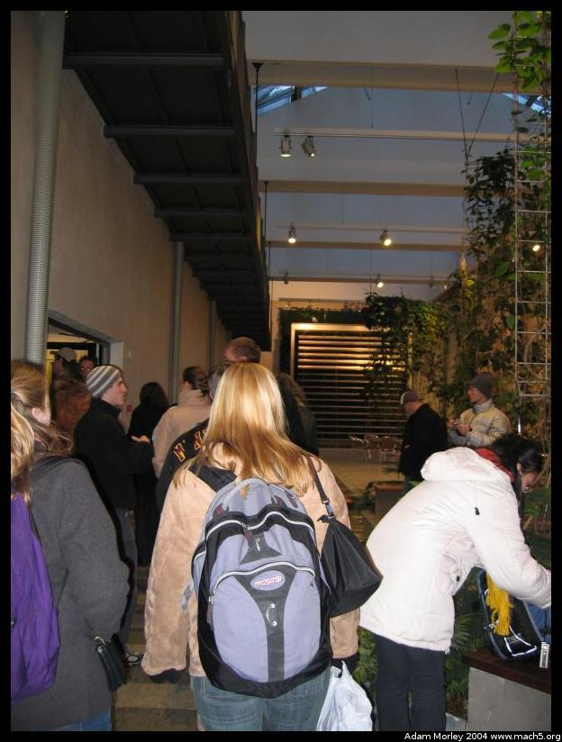
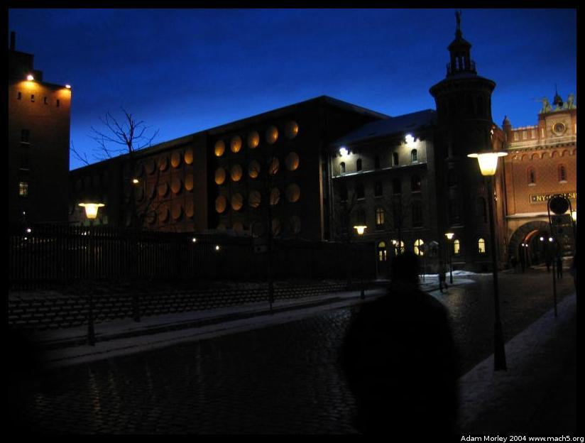
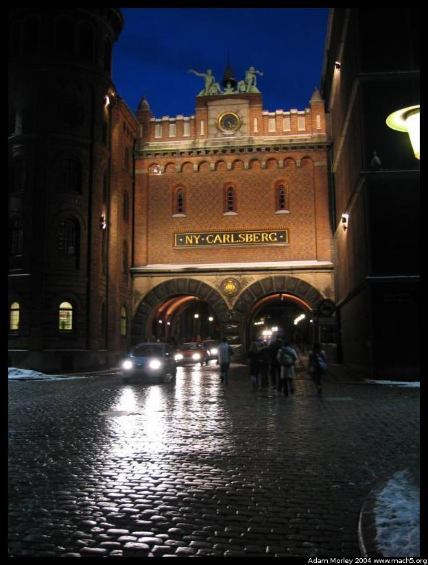
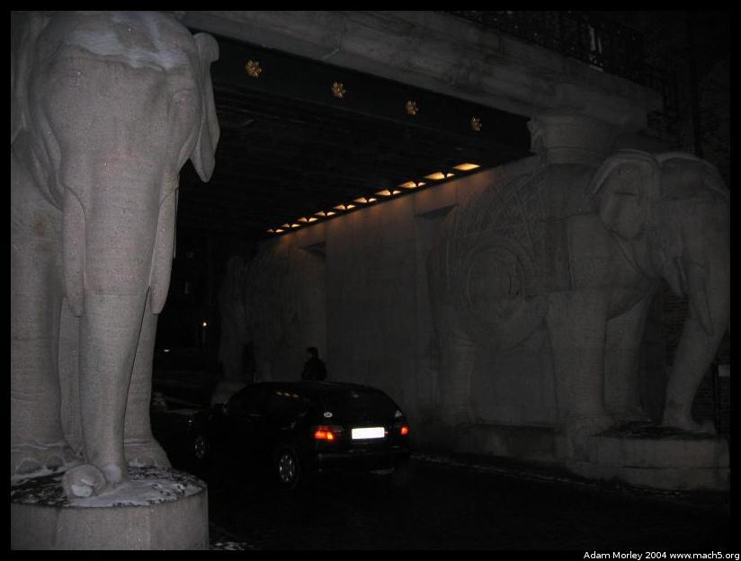
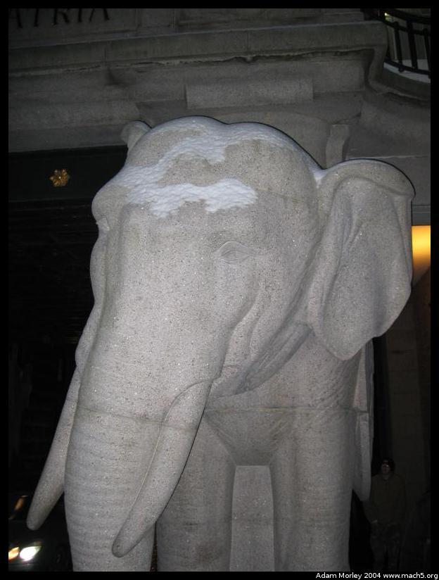
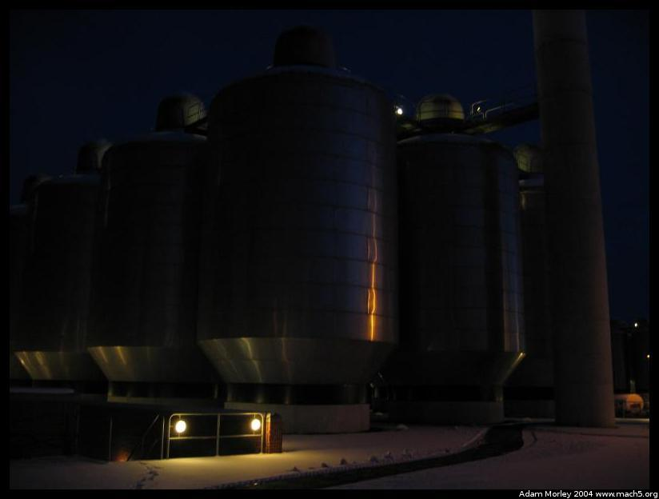
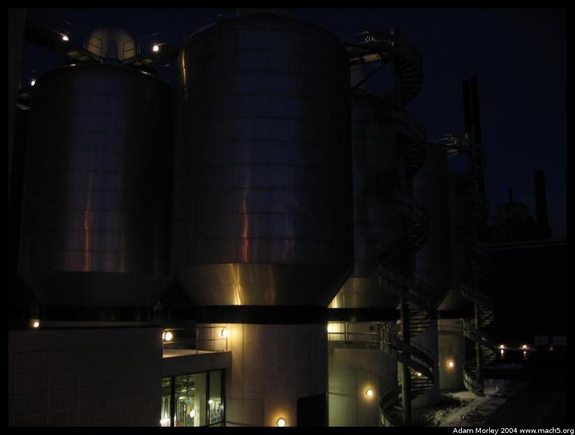
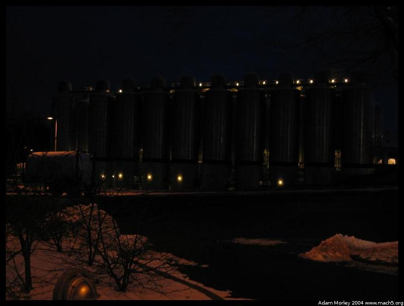

DIS managed to get us a tour of the Carlsberg brewery. The Carlsberg group owns a fair number of brands of beer, their primary one being Carlsberg which is not popular in the USA. Their "target market" according to the head of the Visitor Center is people of DIS age and older up to around twenty-nine. Oddly, we were at times rather skeptical of their motives. After all, they did give us free beer. And we all know there is no such thing as free beer.
The tour started with a marketing video where they introduced the glamour of drinking Carlsberg beer (you know, the usual marketing stuff such as "If you drink Carlsberg you will be beautiful and get to glance longingly at other beautiful people and then meet and so on and so forth"), and their slogan, "Probably the best beer in the World." During the Q&A session that followed the video, someone mentioned that perhaps their slogan was one reason for their lack of success in the American market. But the Danes are big on understatement -- they don't want to tell you something is the best (be it their country, their government, or their beer), they'd rather you figure it out for yourself. The slogan was developed in the UK, where Carlsberg is apparently a major brand.
My host parents were kind enough to share with me some history on beer in Denmark. I'm sure the full story is related elsewhere, but suffice it to say that Tuborg (a local brand Carlsberg purchased) is what is consumed at our house. This, and other local brands Carlsberg owns are not the focus of its marketing -- 80% of the marketing money goes to the Carlsberg brand. So I just had to know, what really was the percentage of Carlsberg's sales that were local brands. This was the only question that the head of the Visitor Center said he would not answer.
Another girl asked about what Carlsberg does to combat alcoholism. The presenter mentioned they don't do anything as Carlsberg, but they do participate in a brewers association which does alcoholism education in the workplace and in other venues. A later question on whether employees received free beer ended with an answer that the employees received six free beers during their twelve hour shift (they can't take them home, as it must be consumed at work). Apparently, this was a historical benefit, from the beer rationing process originally introduced when Carlsberg was founded.
One oddity of the tour was that we didn't get to actually see the brewery. We saw a video, had a Q&A session, toured the visitor center, saw the Carlsberg horses, and then went into a room to consume as much beer as we could in just over an hour. Not surprisingly, DIS provided the free sandwhices while Carlsberg provided the beer. Only Carlsberg label, none of the local brands.
But anyways, enough talking, on to the pictures.

The entrace lobby, taken on the go. I think the girl in the front of the picture is named Wendy.
Walking up toward the "Elephant gate." Pretty old buildings, and apparently I can hand-hold ISO 50 at night. At least digital.
New Carlsberg, on the way to the visitor center. The gate ahead in the picture is the "Elephant gate" -- you'll see why in a moment.
This is why its called the Elephant Gate. Interestingly, the highest order given to citizens of Denmark is the "Order of the Elephant." Rather odd, but we have to remember that elephant like creatures did once roam this land.
What would an Elephant gate be without a close up? Its fairly clear I need to start using the spot meter and the FEL.
Silos used for storing beer ingrediants. Or fermenting beer. One of the two.
More silos. I just couldn't resist -- it was nighttime photography and there was an elbow height railing. Plus, this was as close as we got to the actual beer production facility.
The final set of silos.After this, there was a big room with lots of beer. And lots of "Cheers" in Danish, and singing, or rather attempts at singing.
Adam can be reached at adam dot morley at gmail dot com